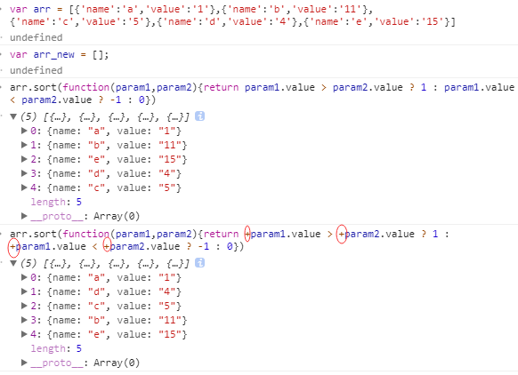

参考:https://developer.mozilla.org/en-US/docs/Web/JavaScript/Reference/Global_Objects/Array/sort
https://yq.aliyun.com/articles/64376
问题
前两天,一小伙伴在吹牛群发了一个截图,问我们他的代码为什么没有起作用,代码如下:
讲道理,我第一看到这种连环嵌套三元运算的。毕竟才疏学浅,当时的第一想法是这个语法是错的,遂打开谷歌浏览器控制台进行测试。
我的测试:

代码在控制台能够正常运行,说明语法没错,嗯,我又学到了一点。但是,我一开始并没有加
+号,结果返回的和sort()方法默认的一样,反而加了+就能正常排序了,这是为什么?
还有,为什么不直接arr.sort(function(param1,param2){return +param1.value > +param2.value ? 1 : -1}),反而要嵌套呢?
这时候,我需要重新去仔细深入学习JS的sort()方法了。
MDN上对Array.prototype.sort()的讲解
MDN一开头就说
The sort() method sorts the elements of an array in place and returns the array.The sort is not necessarily stable.The default sort order is according to string Unicode code points.,意思是sort()方法对数组进行排序并返回排序后的数组,但是sort方法不稳定,默认以字符串Unicode编码排序。
这里我主要列举当时的疑惑或者sort()方法的不足
注意:我们基本上刚开始接触sort()方法时都遇到过这种情况,在日常开发运用中基本上也能想到这个不足之处,但是由于一开始学的比较渣,理解的不深,今天再度学习知道,出现以上情况是由于sort()方法是按照字符串Unicode编码排序的,而上例中
12的Unicode编码在2的Unicode编码之前,所以使用sort()排序后12排在了2之前。
The sorted array. Note that the array is sorted in place, and no copy is made.
sort()方法的返回值是排序后的数组,不是复制后排序的数组!!!也就是说,原数组被改变了。
对sort()方法的描述
- sort()方法里面没有自己定义比较函数的,直接以默认的字符串Unicode编码排序
- sort()方法里面自己定义了比较函数的,If compareFunction is supplied, the array elements are sorted according to the return value of the compare function.即根据自定义的比较函数的返回值来排序。
原文内容:
- If compareFunction(a, b) is less than 0, sort a to an index lower than b, i.e. a comes first.
如果返回值小于0,a排在b前面。
- If compareFunction(a, b) returns 0, leave a and b unchanged with respect to each other, but sorted with respect to all different elements. Note: the ECMAscript standard does not guarantee this behaviour, and thus not all browsers (e.g. Mozilla versions dating back to at least 2003) respect this.
如果返回值是0,不改变这两个元素的相对位置。ECMAScript 标准并不保证这一行为，而且也不是所有浏览器都会遵守（例如 Mozilla 在 2003 年之前的版本）。
- If compareFunction(a, b) is greater than 0, sort b to an index lower than a, i.e. b comes first.
如果返回值大于0,b排在a前面。
- compareFunction(a, b) must always return the same value when given a specific pair of elements a and b as its two arguments. If inconsistent results are returned then the sort order is undefined.
当给定一对特定的元素a和b作为比较函数的参数时,它的返回值应该是相同的。如果返回了不一致的结果,那么sort排序就不确定。
所以,比较函数的形式如下:
简单的升序排列例子:
对非 ASCII 字符排序
当排序非 ASCII 字符的字符串（如包含类似 e, é, è, a, ä 等字符的字符串）。一些非英语语言的字符串需要使用 String.localeCompare。这个函数可以将函数排序到正确的顺序。
|
|
使用映射改善排序
compareFunction 可能需要对元素做多次映射以实现排序，尤其当 compareFunction 较为复杂，且元素较多的时候，某些 compareFunction 可能会导致很高的负载。使用 map 辅助排序将会是一个好主意。基本思想是首先将数组中的每个元素比较的实际值取出来，排序后再将数组恢复。
|
|
解析: sort()方法内的比较函数返回的是
+(a.value > b.value) || +(a.value === b.value) - 1,why?
因为这里的value是小写的字符串,字符串比较是直接比较Unicode编码的,经检测,括号前的+可以省去。
这里的+的意思其实是把比较得到的boolean值强转成数值类型,因为前文说了,sort()方法自定义的函数是根据返回值与0的比较来进行排序的。
为什么还要-1呢?
这是为了应对两者值相等的情况下进行比较。当两者值相等,那么
a.value === b.value返回true,+true强转成1,1 - 1值为0,根据前文的定义可以得知返回值为0时不改变两者相对位置。
改写下:
这种方法其实是一样的。
脑抽把小伙伴的代码拿过来用:
没变化。。。why?
所以说要仔细真正的理解代码的意思。前文我说了
+起到强转的作用,+(a.value > b.value)是对括号内比较得到的boolean值进行强转,true 转为 1, false 转为 0.但是这里直接+a.value是对字符串的强转,以"alpha"为例,转为数值是NaN,JS高级编程书上说道,对NaN所有的比较运算都是false。这是JS的规则。
总结
sort内部自定义的排序函数，需要返回正数、负数或者0才是标准的影响排序的函数。仅仅返回boolean值是没用的！！！
至于小伙伴的问题,这段代码没错。他之所以说有问题是因为他没在控制台看到输出,其实,他自己没有用console.log()打印出来,233333333333.